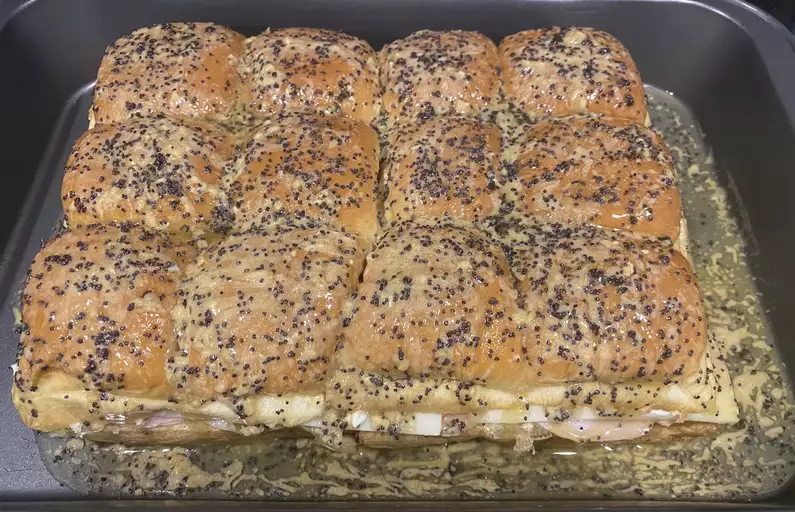

Baked Ham and Cheese Sliders Recipe
Baked Ham and Cheese Sliders

Description
These baked ham and cheese sliders are delicious sandwhiches.
An easy and quick appetize for a party or a quick dinner.
Ingredients
- ¾ cup melted butter
- 1 ½ tablespoons Dijon mustard
- 1 ½ teaspoons Worcestershire sauce
- 1 ½ tablespoons poppy seeds
- 1 tablespoon dried minced onion
- 24 mini sandwich rolls
- 1 pound thinly sliced cooked deli ham
- 1 pound thinly sliced Swiss cheese
Steps
- Gather all the ingredients.
- Preheat the oven to 350 degrees F (175 degrees C). Grease a 9x13-inch baking dish.
- Mix butter, Dijon mustard, Worcestershire sauce, poppy seeds, and dired onion in a bowl.
- Separate the tops from the bottoms of the rolls; arrange the bottom pieces in a layer in the prepared baking dish. Layer about 1/2 of the ham onto the rolls; add a layer of Swiss cheese and top with remaining ham slices.
- Place the tops of the rolls onto the sandwiches. Pour mustard mixture evenly over the rolls
- Bake in the preheated oven until the rolls are lightly browned and the cheese has melted, about 20 minutes. Slice into individual rolls through the ham and cheese layers to serve.